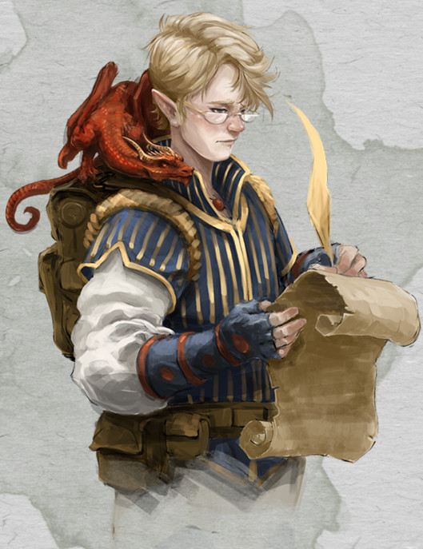

Occultiste elfe niv 1
Peren Holimion
Occultiste (archifée) 1 (0 PX)
Haut-elfe (h), neutre
Sage (scribe)
[ CARACTÉRISTIQUES ]
For 8 (-1) Dex 14 (+2) Con 10 (+0)
Int 16 (+3) Sag 13 (+1) Cha 14 (+2)
[ MAÎTRISES ]
Bonus de maîtrise +2
Sauvegardes Sag +3, Cha +4
Compétences Arcanes +5, Histoire +5, Nature +5, Perception +3, Religion +5 (Perception passive 13)
Armes armes courantes, épée courte, épée longue, arc court, arc long
Armures armures légères
Outils -
Langues commun, elfique, gnome, primordial, sylvain
[ COMBAT ]
pv 8 ; DV 1d8
Init +2 ; Vitesse 9 m
CA 13 (armure matelassée 11, Dex +2)
Dague. Corps à corps : +4 (1d4+2 perforant ; finesse, légère, lancer (portée 6 m/18 m))
Arbalète légère. Distance : +4 (1d8+2 perforant ; munition (portée 24 m/96 m), chargement, à deux mains)
[ SORTS D'OCCULTISTE ]
Caractéristique d'incantation Charisme ; DD de sauvegarde des sorts 12 ; Bonus d'attaque des sorts +4
Emplacements 1 de niveau 1/repos
Sorts connus (2) / 2
- Niv 0 : amis, décharge occulte
- Niv 1 : sommeil, serviteur invisible
[ CAPACITÉS & TRAITS ]
Liste de sorts étendue *
Présence féerique
Magie de pacte
Vision dans le noir (18 m)
Sens aiguisés *
Ascendance féerique (AV aux JdS vs charme et la magie ne peut pas vous endormir)
Transe (4h de méditation remplacent 8h de sommeil)
Sort mineur : illusion mineure (à volonté)
Chercheur
[ ÉQUIPEMENT ]
Dague (2), arbalète légère, armure matelassée, kit d'herboriste, jeu d'échecs draconiques, 20 carreaux, sacoche à composantes, sac à dos, livre, encre/bouteille, plume d'écriture, parchemin (10), vêtements communs, petit sac de sable, petit couteau, lettre d'un collègue mort, bourse
Coût de l'équipement 114.52 po ; Poids de l'équipement 17 kg
10 po
Poids des pièces 0.1 kg
[ PERSONNAGE ]
Taille M / 1,58 m / 47 kg ; Âge 97 ans (âge apparent 23)
Yeux verts ; Peau blanche ; Cheveux blonds
Apparence du personnage Petit elfe à l'apparence fragile et délicate, et à la musculature frêle, Peren irradie d'une énergie palpable qui le rend plus solide qu'il n'en a l'air...
Trait Je suis disposé à écouter tous les arguments avant de me faire mon propre jugement.
Idéal Connaissances. Le chemin vers le pouvoir et le progrès personnel passe par la connaissance.
Lien Le travail de ma vie est une série de livres sur un domaine spécifique de connaissance.
Défaut La plupart des gens crient et courent quand ils voient un démon. Moi je m'arrête et je prends des notes sur son anatomie.
Passé du personnage Peren est fils d'une famille mineure d'elfes vivant dans une cité sylvestre de bonne taille, dotée d'antiques centres du savoir, et notamment d'un monastère de Séluné bien implanté avec une bibliothèque fort bien fournie. Il y fit des études approfondies, hésitant à se destiner à une vie d'étude de la magie ou d'adoration de Séluné, à la grande satisfaction de son entourage, qui le voyait progresser très vite. Malheureusement, de nature fragile depuis la naissance, il était sujet à des attaques et à des moments de faiblesse graves qui l'obligeaient à garder le lit pendant des semaines. S'aggravant avec le temps, cette maladie sans explications ne put être traitée par les clercs de Séluné, et il finit par être rendu à ses parents, officiellement "pour qu'il se remette au mieux", mais officieusement on leur fit comprendre de se faire oublier, qu'il n'était pas concevable que le Temple n'arrive pas à soigner l'un des siens (il n'était pas question que ce témoin de l'échec du clergé de Séluné reste à proximité des futurs élus de celle-ci). Quelques mois plus tard, la maladie de Peren s'étant stabilisée, il prit l'habitude de faire de grandes et dangereuses promenades en solitaire autour du village des elfes des bois où ses parents et lui s'étaient retrouvés exilés. Plus le temps passait, plus sa santé s'améliorait, plus les elfes locaux étaient en admiration devant ce rejeton rachitique qui s'affermissait jour après jour et que les animaux de la forêt semblaient avoir en adoration. Quelques années après l'arrivée de ces nouveaux venus, il devint évident que Peren était devenu un favori d'Obéron, pour quelque raison mystérieuse.
[ ÉVOLUTION ]
Les suggestions ci-après sont en lien avec le passé de Peren.
Au niveau 2, ajoutez la capacité Manifestations occultes (Fascination et Langage animal) et ajoutez lueurs dansantes aux sorts connus (ses pv passent à 13, ses DV à 2d8 et les emplacements de sorts passent à 2 de niveau 1).
Au niveau 3, ajoutez couronne du dément aux sorts connus et ajoutez la capacité Faveur de pacte : Pacte de la Chaîne/pseudodragon (ses pv passent à 18, ses DV à 3d8 et les emplacements de sorts passent à 2 de niveau 2).
Stat et histoire de Thôt